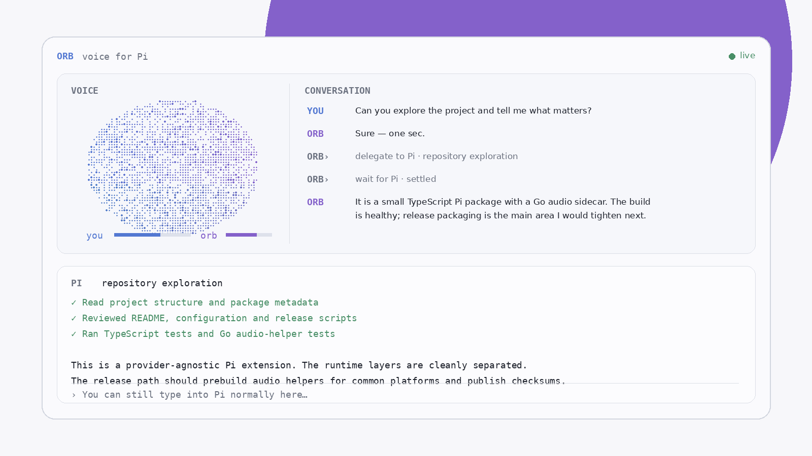

Say what you need
“Explore the project.” “Figure out why this test fails.” “Write the migration spec.” Broad intent is enough.
Voice for the Pi coding harness
Orb turns a spoken goal into useful Pi work, waits while the agent handles the details, and gives you the high-level update when it matters.
Full duplex · Gemini Live or OpenAI Realtime · hardware-timed Go audio

Pi already knows how to read, edit, run tests, and work through a repository.
“Explore the project.” “Figure out why this test fails.” “Write the migration spec.” Broad intent is enough.
It gives Pi a complete engineering task instead of asking you to approve routine steps one by one.
You keep the normal Pi screen. Type commands yourself, inspect tools, or simply let the task run.
Orb waits, observes visible results, and comes back with the outcome, blocker, or next meaningful decision.
Can you explore the project?
Sure — one sec.
It’s a small TypeScript Pi package with a Go audio sidecar. The build is healthy; release packaging is the main thing I’d tighten next.
Quiet by design
Native Pi stays visible. Orb does not duplicate Pi's own tool log or take over its editor.
Configurable behavior. Model, voice, UI density, panel size, session settings, and the complete voice-agent prompt can live in config files.
Long-session aware. Gemini connection rotation uses session resumption and context compression; failed rollover closes gracefully instead of looking like a crash.
Developer friendly. Provider adapters, Pi orchestration, audio, and rendering are separate layers with deterministic tests.
Install
pi install https://github.com/alainux/orb
pi
/voicecurl -fsSL https://raw.githubusercontent.com/alainux/orb/main/scripts/install.sh | sh
orbWindows: iwr https://raw.githubusercontent.com/alainux/orb/main/scripts/install.ps1 -UseBasicParsing | iex